Molding and Casting
Week 12

molding and casting
Tasks
design a 3D mold, machine it, and use it to cast parts
The Mold
I started to think about what i would make and i decided to mold one of my favourite dogs, wich i own, scottish terrier, called Anis. I got a picture of my dog and started editing in illustrator to vectorize it, both the superior and inferior mold. I modelled on 3d studio max and this was how it went:
Photo of my good old friend
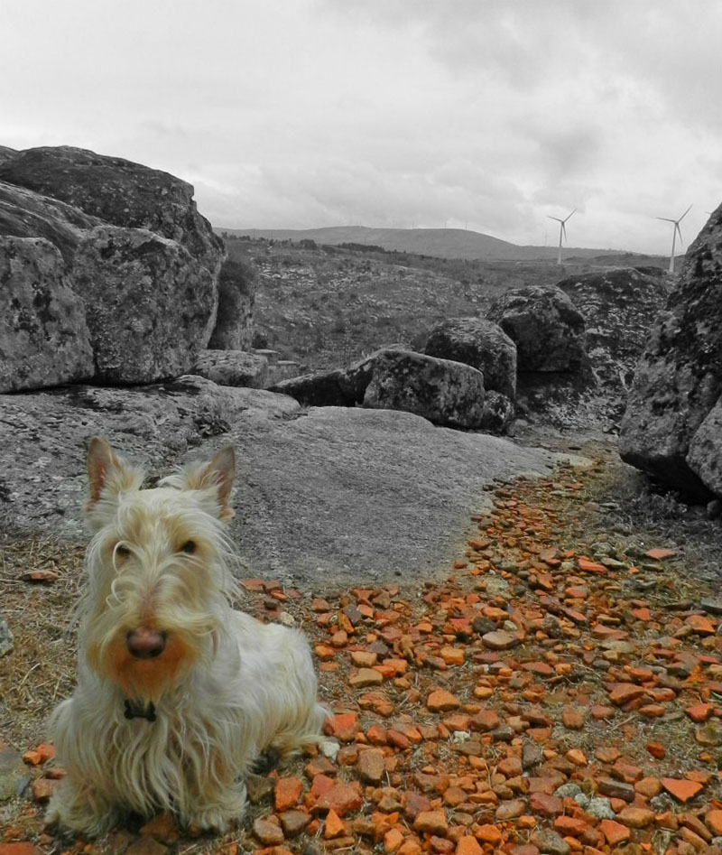
Vectorizing the mold in Adobe Illustrator
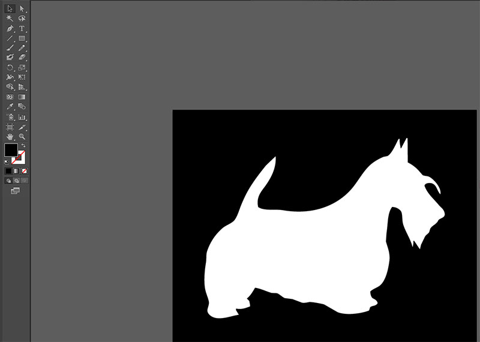
modelling in 3d Studio Max
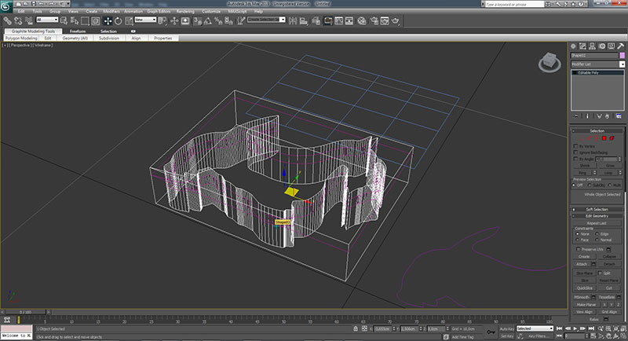
final renders
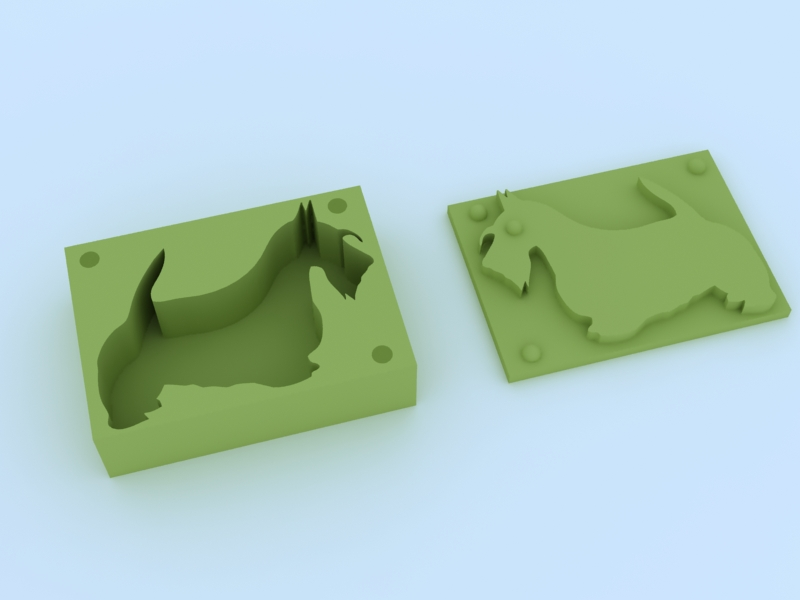
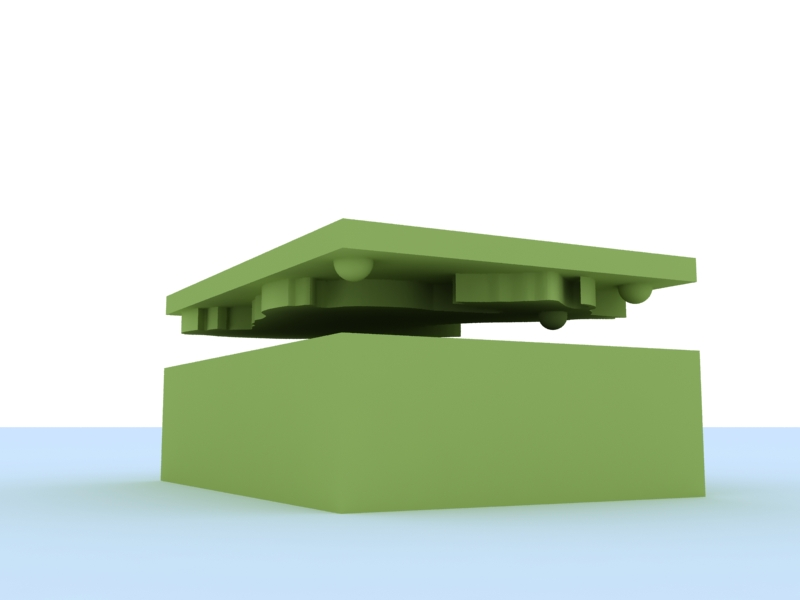
I realized i did'n't needthe negative mold because my shape is simple, it has only an eye on the superior mold. Then i started to work with the modella. We used paraphine bars to mill and used the 1mm end mill.
I decided not to make the finishing process and i didn't regret because the paraphine was perfect and there was no 3d curves to smooth the final model. I just retouched it with a little brush.
machining the model in the modella
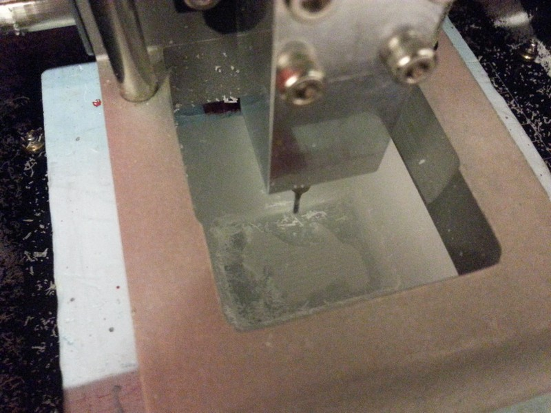
final mold
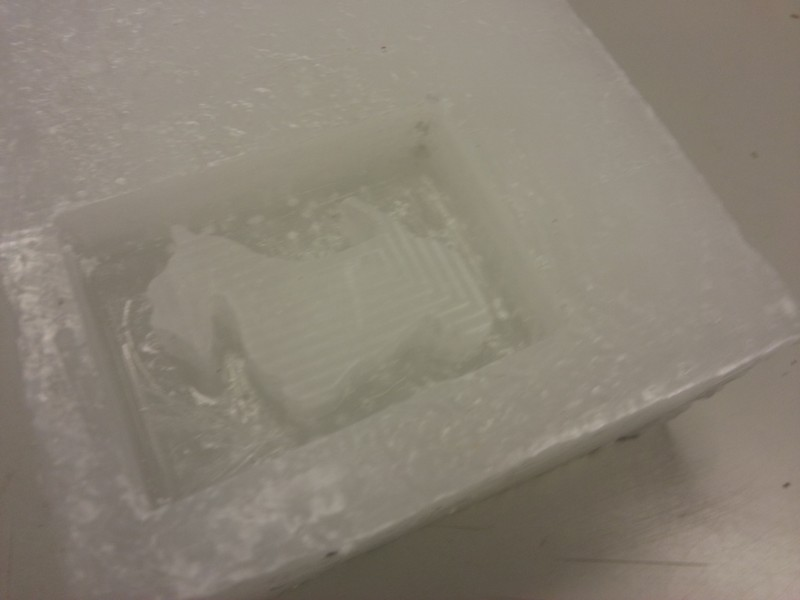
Then the resine composing started. After reading the security instrucions, i put a pair of gloves and start mixing the liquid rubber for making the negative mold.
Rubber mold creation
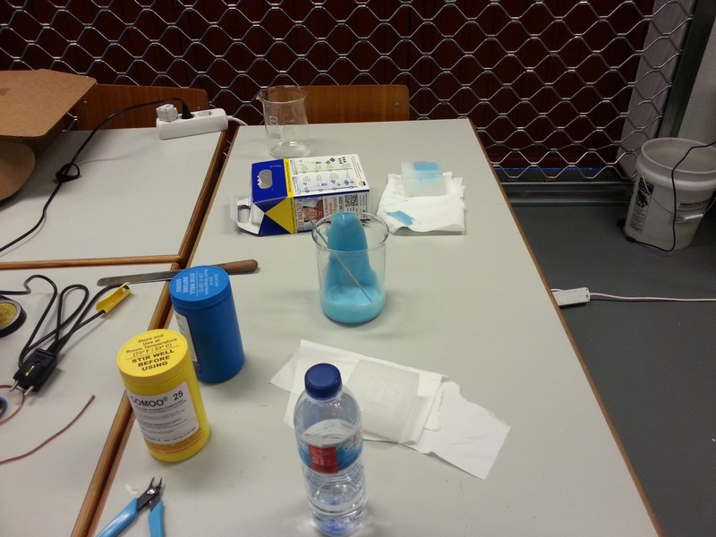
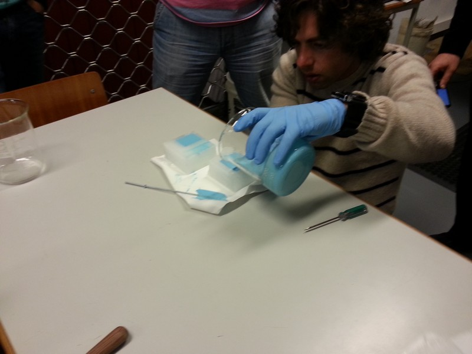
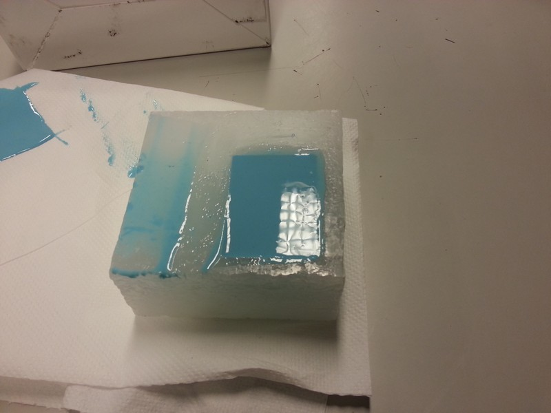
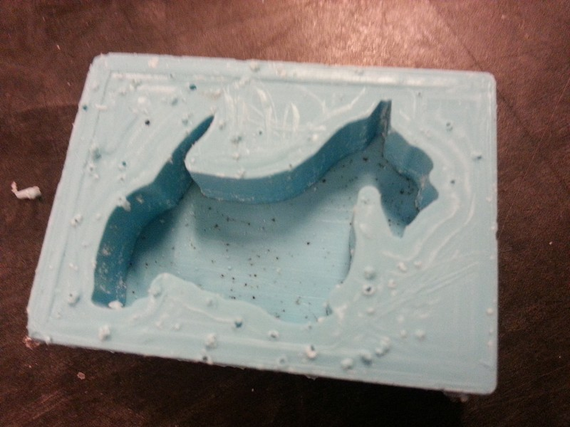
I had to wait aprox. 1 day for the negative mold to dry and was ready to receive the transparent plastic. I filled the negative mold wit it and waited aprox. 3 hours. Here's the final result:
Casting process
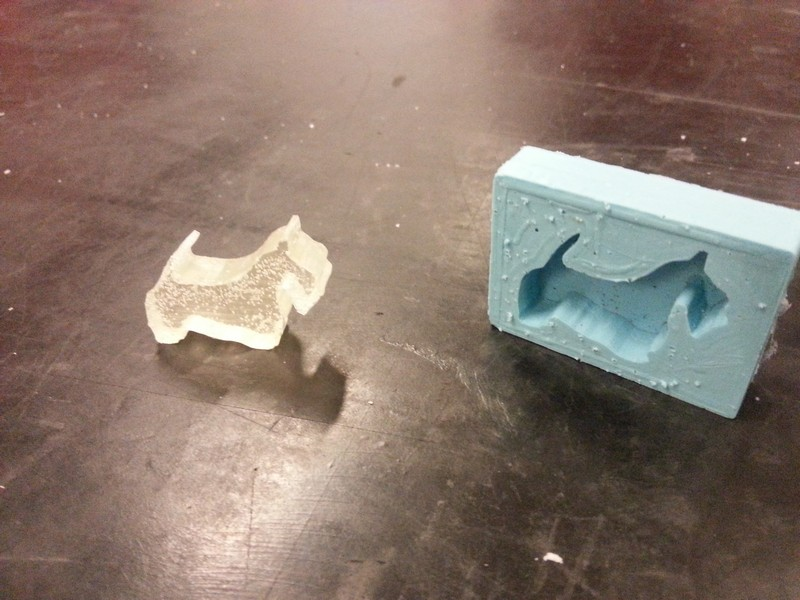
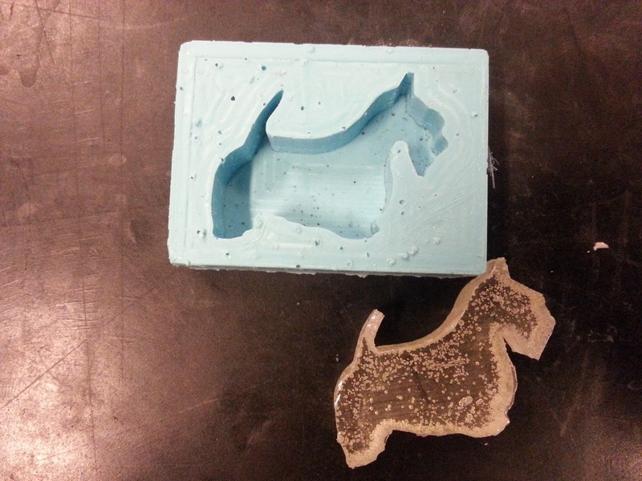
I realized ther were lots of bubbles in both the molds, wich compromises the final quality of them. So next time we better use the vacuum pump to tak all the air inside de resins.
All files